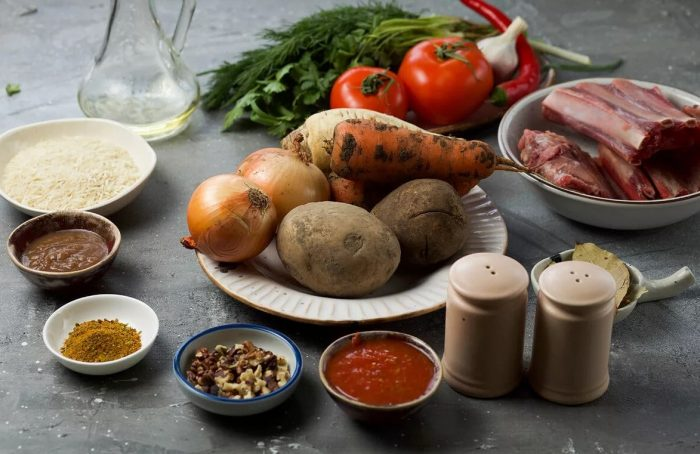
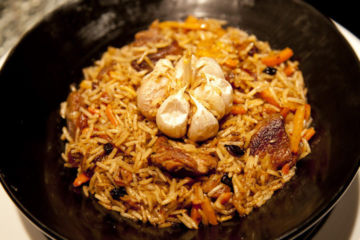

Плов
 4.5
4.5
От 20 рублей

Ингредиенты
Мякоть свинины
Рис
Лук репчатый
Морковь
Масло
Приправа
Соль
Горячая вода
Рис
Лук репчатый
Морковь
Масло
Приправа
Соль
Горячая вода
1.5 кг
1 кг
1 кг
1 кг
300 мл
2 ч.л.
2 ч.л.
1.5 л
1 кг
1 кг
1 кг
300 мл
2 ч.л.
2 ч.л.
1.5 л

Способ приготовления
Мясо тщательно на небольшие кусочки.
Почистим морковку и нарежем полосками.
Очистим лук, нарежем тонкими полукольцами.
Наливаем в кастрюлю масло и разогреваем на сильном огне. Бросим в масло немного лука и обжарим. Затем убираем лук из казана.
Выкладываем в разогретое масло мясо.
Минуты через 3 перемешиваем и продолжаем обжаривать на сильном огне до любимой вами степени.
Мясо обжарилось, добавляем лук и перемешиваем. Обжариваем минут 5-7. Не забываем перемешивать.
Теперь добавим полосочки моркови. Все перемешиваем и обжариваем.
А теперь добавим примерно полтора-два стакана горячей воды, чайную ложку соли и приправу для плова. Даем покипеть минут 15-20 под крышкой на среднем огне.
Чтобы у вас гарантированно получился плов, а не каша, лучше возьмите пропаренный рис. Выкладываем промытый рис в казан.
Разравниваем рис и доливаем горячей воды.
Когда выкипит жидкость и рис окажется на поверхности, собираем его небольшой горкой. Делаем несколько дырок черенком ложки до дна казана или кастрюли. И плотно закрываем плов крышкой. Уменьшаем огонь до маленького и готовим еще минут 20. Затем выключаем огонь, и пусть плов постоит еще минут 15.
Раскладываем плов по тарелкам или выкладываем в одно большое блюдо.